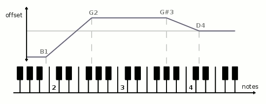
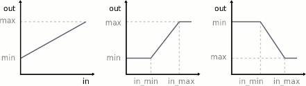

Units are the basic building blocks from which you can build your mididings patches.
Note
This document doesn’t describe what the documented functions do, but rather what the objects they return do. For example, the Transpose() function does not actually transpose anything. It merely returns an object that, when inserted into a patch, will transpose incoming events.
Filter events by type, see here.
Filter events by port name or number. The ports argument can be a single port or a list of multiple ports.
Filter events by channel number. The channels argument can be a single channel number or a list of multiple channel numbers. System events (which don’t carry channel information) are discarded.
Filter note events by key (note number or note range). All other events are let through. The last form expects its argument to be a list of individual note names or numbers.
# match a note range
KeyFilter('c1:a3')
# match anything above middle C (note number 60)
KeyFilter(lower=60)
# match individual notes
KeyFilter(notes=[60, 61, 'c5'])
Filter note-on events by velocity. All other events are let through.
Filter control change events by controller number. The ctrls argument can be a single controller or a list of multiple controller numbers. All other events are discarded.
# remove all sustain pedal messages
~CtrlFilter(64)
Filter control change events by controller value. All other events are discarded.
Filter program change events by program number. The programs argument can be a single program number or a list of program numbers. All other events are discarded.
Filter system exclusive events by the data they contain, specified as a string or as a sequence of integers. If sysex does not end with F7, partial matches that start with the given data bytes are accepted.
Alternatively, a sysex manufacturer id can be specified, which may be either a string or a sequence of integers, with a length of one or three bytes.
All non-sysex events are discarded.
# match SysEx messages starting with 'F0 07 15 42'
SysExFilter('\xf0\x07\x15\x42')
# match SysEx messages for Yamaha devices
SysExFilter(manufacturer=0x43)
For filters which accept an arbitrary number of arguments, each argument may also be a list or tuple of values. The following filters are equivalent:
PortFilter(1, 2, 3, 4)
PortFilter([1, 2, 3, 4])
PortFilter(1, 2, (3, 4))
Split by event type, see here.
Split events by input port, with mapping being a dictionary of the form {ports: patch, ...}.
config(in_ports = ['keyboard', 'piano', 'footswitch'],
out_ports = ['synth', 'sampler'])
...
PortSplit({
'keyboard': Output('sampler', 1),
'piano': Transpose(-12) >> Output('sampler', 2),
'footswitch': Output('synth', 1),
})
Split events by input channel, with mapping being a dictionary of the form {channels: patch, ...}.
Split events by key. Non-note events are sent to all patches.
The first version splits at a single threshold. The second version allows an arbitrary number of (possibly overlapping) note ranges, with mapping being a dictionary of the form {note_range: patch, ...}.
KeySplit('c3', Port('bass'), Port('piano'))
KeySplit({
':c3': Port('bass'),
'c3:a#5': Port('piano'),
'a#5:': Port('strings'),
})
Split events by note-on velocity. Non-note events are sent to all patches.
The first version splits at a single threshold. The second version allows an arbitrary number of (possibly overlapping) value ranges, with mapping being a dictionary of the form {(lower, upper): patch, ...}.
Split events by controller number, with mapping being a dictionary of the form {ctrls: patch, ...}. Non-control-change events are discarded.
Split events by controller value.
The first version splits at a single threshold. The second version allows an arbitrary number of (possibly overlapping) value ranges, with mapping being a dictionary of the form {value: patch, ...} or {(lower, upper): patch, ...}.
Non-control-change events are discarded.
Split events by program number, with mapping being a dictionary of the form {programs: patch, ...}. Non-program-change events are discarded.
Split events by sysex data or manufacturer id, with mapping being a dictionary of the form {sysex: patch, ...}, and manufacturers being a dictionary of the form {manufacturer: patch, ...} (cf. SysExFilter()).
Non-sysex events are discarded.
Change the event’s port number.
# route to the second output port
Port(2)
# route to the port named 'synth'
Port('synth')
Change the event’s channel number.
Transpose note events by the given number of semitones or octaves.
Change note events to a fixed note number.
Change the velocity of note-on events:
Within mididings, velocity values may be (temporarily) greater than 127 or less than 1. When sending events through a MIDI output port, or by using the Sanitize() unit, velocities greater than 127 will automatically be reduced to 127, and events with a velocity less than 1 will be removed.
# reduce velocity of note-on events by an offset
Velocity(-20)
# increase velocity of note-on events by applying a curve
Velocity(curve=1.0)
Change the velocity of note-on events, applying a linear slope between different notes. This can be thought of as a Velocity() unit with different parameters for different note ranges, and is useful for example to fade-in a sound over a region of the keyboard.
Both parameters must be sequences of the same length, with notes in ascending order, and one velocity parameter corresponding to each note.
# apply a velocity slope as seen in the graphic above
VelocitySlope(notes=('b1','g2','g#3','d4'), offset=(-64, 32, 32, 0))
Limit velocities of note-on events to the given range.
# limit velocity values to a maximum of 100
VelocityLimit(max=100)
Convert controller ctrl_in to ctrl_out, i.e. change the event’s control change number.
# convert sustain pedal to sostenuto
CtrlMap(64, 66)
Linearly map control change values for controller ctrl from the interval [in_min, in_max] to the interval [min, max]. Any input value less than or equal to in_min results in an output value of min. Likewise, any value of in_max or greater results in an output value of max.
# invert controller 11
CtrlRange(11, 127, 0)
Transform control change values. See Velocity() for a description of the parameters.
Change the pitchbend range to values between min and max, or to the given number of semitones down and up. The latter requires the tone generator’s pitchbend range to be specified as range.
# set up the pitchbend wheel to bend a full octave down, but only
# one whole step up, assuming the synth is set to a symmetric range of
# 12 semitones
PitchbendRange(-12, 2, range=12)
Generators change the type of an event, either generating an entirely new event, or retaining some attributes of the original event.
If the port and channel arguments are omitted for any of these generators, the values are retained from the incoming event. To reuse other values, one of the Event Attribute constants can be used in place of any parameter.
Create a note-on event, replacing the incoming event.
Create a note-off event, replacing the incoming event.
Create a control change event, replacing the incoming event.
# convert aftertouch to CC #1 (modulation)
Filter(AFTERTOUCH) % Ctrl(1, EVENT_VALUE)
Create a pitch-bend event, replacing the incoming event.
Create an aftertouch event, replacing the incoming event.
Create a polyphonic aftertouch event, replacing the incoming event.
Create a program change event, replacing the incoming event.
Create a system exclusive event, replacing the incoming event. sysex can be a string (binary or ASCII) or a sequence of integers, and must include the leading F0 and trailing F7 bytes.
# binary string notation
SysEx('\xf0\x04\x08\x15\x16\x23\x42\xf7')
# ASCII string notation
SysEx('F0 04 08 15 16 23 42 F7')
# list notation
SysEx([0xf0, 0x04, 0x08, 0x15, 0x16, 0x23, 0x42, 0xf7])
# sysex message read from a file
SysEx(open('example.syx').read())
Generic generator to change the incoming event’s type and data. System common and system realtime events can only be created this way.
Process the incoming MIDI event using a Python function, then continue executing the mididings patch with the events returned from that function.
| Parameters: |
|
|---|
Any other MIDI processing will be stalled until function returns, so this should only be used with functions that don’t block. Use Call() for tasks that may take longer and/or don’t require returning any MIDI events.
# invert velocities of all note-on events
def invert_velocity(ev):
if ev.type == NOTEON:
ev.velocity = 128 - ev.velocity
return ev
run(Process(invert_velocity))
Schedule a Python function for execution. The incoming event is discarded.
| Parameters: |
|
|---|
Switch to another scene.
number can be a fixed scene number, or one of the Event Attribute constants to use a value from the incoming event’s data. With no arguments, the program number of the incoming event (which should be a program change) will be used.
offset can be a positive or negative value that will be added to the current scene number, allowing you to go forward or backward in the list of scenes.
# switch scenes based on incoming program change messages
Filter(PROGRAM) >> SceneSwitch()
Switches between subscenes within a scene group.
number can be a fixed subscene number, or one of the Event Attribute constants to use a value from the incoming event’s data. With no arguments, the program number of the incoming event (which should be a program change) will be used.
offset can be a positive or negative value that will be added to the current subscene number, allowing you to go forward or backward in the list of subscenes. If wrap is True you can loop through subscenes.
# switch to the next subscene when C1 is pressed
Filter(NOTEON) >> KeyFilter('c1') >> SubSceneSwitch(1)
Add patch to the init patch of the scene containing this unit, so that it will be executed when switching to this scene. The patch is added in parallel to whatever is already in the init patch.
This unit does no event processing in the patch it is inserted in, and discards all events.
Most of the time it’s more convenient to create a Scene object with an explicit init patch, or to use Output(), rather than using Init() directly.
Add patch to the exit patch of the scene containing this unit, so that it will be executed when leaving this scene, switching to a different one. The patch is added in parallel to whatever is already in the exit patch.
This unit does no event processing in the patch it is inserted in, and discards all events.
Route incoming events to the specified port and channel. When switching to the scene containing this unit, a program change and/or arbitrary control changes can be sent.
To send a bank select (CC #0 and CC #32) before the program change, program can be a tuple with two elements, where the first element is the bank number, and the second is the program number.
Values for the commonly used controllers volume (#7), pan (#10) and expression (#11) can be specified directly. For all other controllers, the ctrls argument can contain a mapping from controller numbers to their respective values.
If port or channel are None, events will be routed to the first port/channel.
# route all events to output 'synth', channel 1, and set volume to 100
Output('synth', 1, volume=100)
Create an object that when called will behave like Output(), with args and kwargs replacing some of its arguments. That is, OutputTemplate() is not a unit by itself, but returns one when called.
This works just like functools.partial(Output, *args, **kwargs), but with the added benefit that an OutputTemplate() object also supports operator >> like any unit.
# define an instrument by specifying its output port, channel,
# program number and transposition, then use the same instrument
# in two different patches at different volumes
synth = Transpose(12) >> OutputTemplate('synth', 1, 42)
patch1 = synth(64)
patch2 = synth(127)
# the above is equivalent to:
patch1 = Transpose(12) >> Output('synth', 1, 42, 64)
patch2 = Transpose(12) >> Output('synth', 1, 42, 127)
Print event data or strings to the console.
| Parameters: |
|
|---|
# a simple command-line MIDI event monitor
$ mididings "Print()"
# print a graph of note-on velocities
Filter(NOTEON) % Print(string=lambda ev: '#' * ev.velocity)
Do nothing. This is sometimes useful/necessary as a placeholder, much like the pass statement in Python.
Stop processing the incoming event. Note that it is rarely neccessary to use this, as filters and splits already take care of removing unwanted events.
Make sure the event is a valid MIDI message. Events with invalid port (output), channel, controller, program or note number are discarded. Note velocity and controller values are confined to the range 0-127.